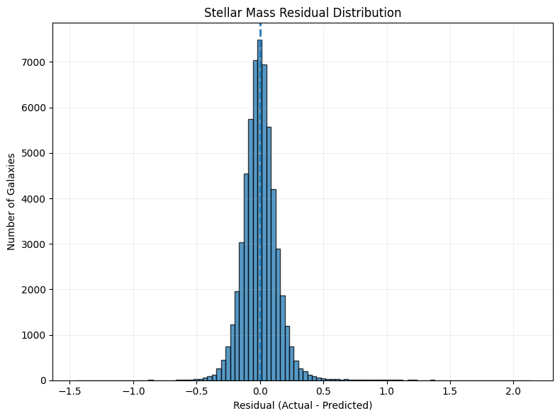
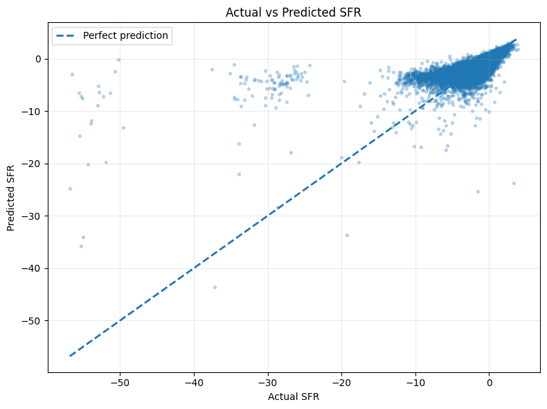
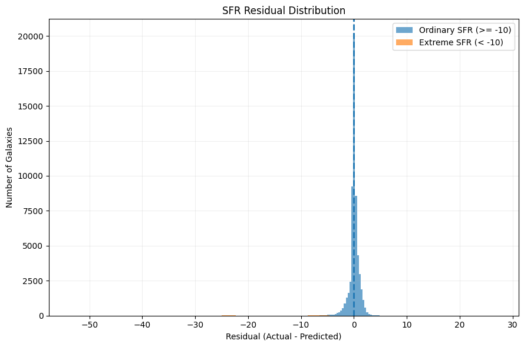
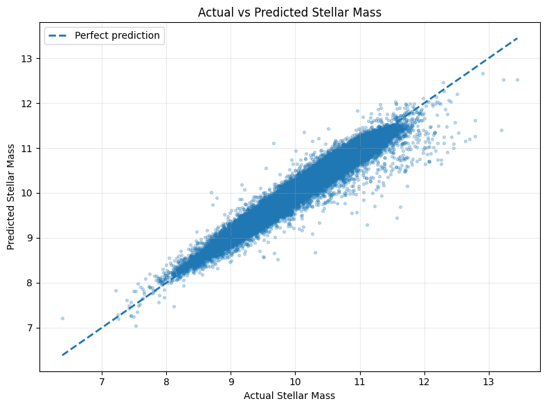

Every prediction leaves a trace. Explore how our machine-learning models reproduce catalogue estimates of stellar mass and star formation rate, and examine the diagnostics behind their performance.
Both models were evaluated on the held-out test set. Stellar mass predictions show strong agreement with the catalogue estimates, while SFR prediction remains a more challenging task.
Coefficient of determination
Mean absolute error
Root mean squared error
Coefficient of determination
Mean absolute error
Root mean squared error
The stellar-mass model achieved an R² of 0.9550, indicating that it explains a high proportion of the variation in the held-out catalogue target values.
The SFR model achieved an R² of 0.5484. Its higher RMSE suggests that larger prediction errors remain for some observations.
R² is shown as a percentage of explained variance for visual comparison. MAE and RMSE are reported in the target values' original catalogue scales. Their physical units and conventions have not been independently verified.
Galaxies exist within a much larger cosmic structure. Dark matter halos are an important part of the standard cosmological picture: their gravitational influence helps shape the formation and distribution of galaxies.
A halo is an extended distribution of dark matter surrounding a galaxy or galaxy group. It cannot be photographed directly in ordinary light; its presence is inferred through gravitational effects.
The cosmic web consists of large-scale filaments, sheets and dense regions. Galaxies form and evolve within this environment. Gravitational lensing provides one way to study the distribution of otherwise invisible mass.
The diagnostic plots help us inspect prediction behaviour, residual patterns and differences between the two target tasks. Select any graph to enlarge it.

Visual comparison of predicted and reference stellar-mass values.

Comparison of predicted and reference star-formation-rate values.

Residual analysis for the stellar-mass model.

Residual behaviour across different SFR quality groups.
Residuals represent differences between reference catalogue values and model predictions. These plots should be interpreted alongside the numerical test-set metrics rather than as independent physical observations.